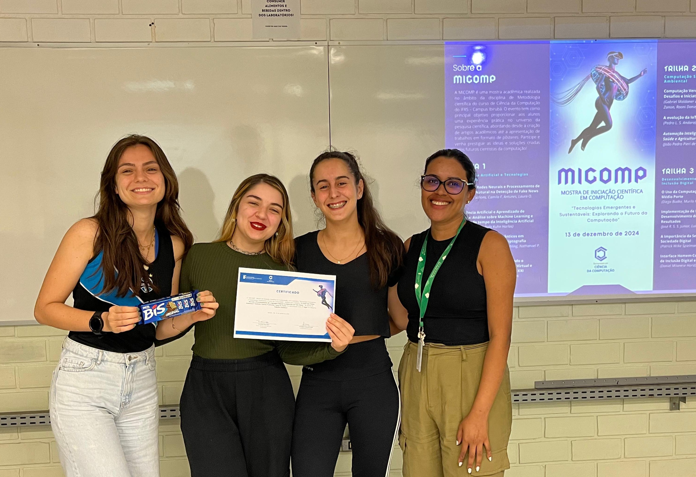

Destaque 1Redes Neurais e Processamento de Linguagem Natural na Detecção de Fake News: Uma Revisão Sistemática da Literatura
O estudo analisa o uso de Processamento de Linguagem Natural e Redes Neurais Artificiais na detecção de fake news. Por meio de uma Revisão Sistemática da Literatura, foram analisados oito estudos publicados entre 2020 e 2025. Os resultados indicam que redes neurais aumentam significativamente a precisão na identificação de desinformação.